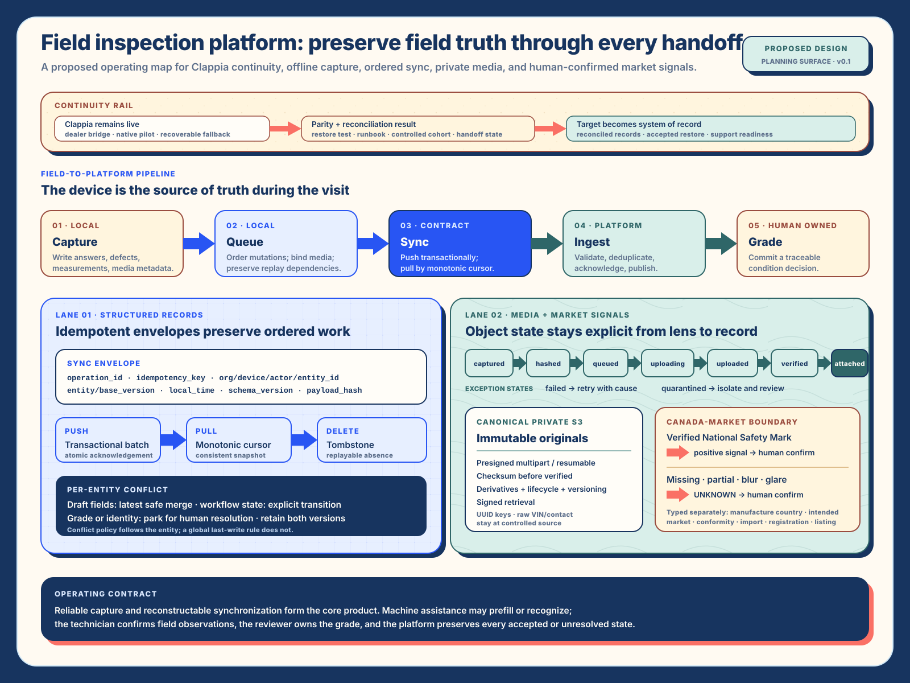

Solution movement Source evidence and changed work · five-beat account
I. Solution Architecture — from serial form to field-operating platform
Debrief — the field constraint
The incumbent path treats an inspection as a series of remote form submissions. That works while signal, device temperature, app state, attachment upload, and spreadsheet behavior all cooperate. In the field, those conditions vary inside one visit. Photos arrive before or after their answers, a process may be interrupted, and an operator may have to re-key what the device already captured.
The material problem is continuity rather than screen parity alone. A re-platform must preserve inspection identity, ordered capture, media provenance, grading decisions, acknowledgement, and the recovery path across dealer intake, dispatch, field work, review, and downstream use.
Bottleneck — the shift: device is source of truth
During the visit, the device owns the latest observed state. Every answer, section transition, defect, media capture, and local decision is durably recorded before network work begins. The server remains authoritative for accepted shared state, access, cross-device coordination, and durable acknowledgement. Device observations remain intact until the server records their durable acknowledgement.
This split turns offline operation into normal workflow. It also gives the inspector a truthful status vocabulary: captured, queued, syncing, acknowledged, or requiring resolution.
Intervention — capture, queue, sync, ingest, grade
The operating flow uses five explicit stations. Small structured records and larger media objects travel through coordinated but independently recoverable paths. The grade remains a human-owned decision with its derivation and revision history attached.
| Station | Local or platform responsibility | Durable result | Recovery behavior |
|---|---|---|---|
| Capture | Write answers, defects, measurements, and media metadata locally before inference or upload. | Inspection record and capture batch with device, actor, time, and schema provenance. | Process death or signal loss returns to the last durable local state. |
| Queue | Order mutations and media references into an envelope with idempotency and payload hashes. | Replayable work with explicit dependencies and tombstones. | Retry resumes from acknowledged operations rather than rebuilding the visit. |
| Sync | Push transactionally; pull from a monotonic cursor and consistent server snapshot. | Durable acknowledgement and a visible exception when shared state diverges. | Each operation applies once; stale writes follow the named entity rule. |
| Ingest | Validate tenancy, schema, content, checksums, and access before attachment. | Accepted relational records and verified private S3 objects. | Failed or quarantined media remains addressable while accepted records stay valid. |
| Grade | Roll section results into a condition grade with a human-confirmed reason and version. | Condition-grade decision and complete audit trail. | Review supersedes an earlier decision while retaining its lineage. |
Outcomes — sync envelopes and per-entity conflict
A sync envelope preserves the operation sequence while each entity applies its own contention rule. Appointment assignment may reject a stale write. An inspection answer may accept an untouched-column update. A grade or market-signal decision may require human review. Media attachment may deduplicate by content hash while preserving every capture's provenance.
The useful outcome is an operation that can distinguish accepted work, pending work, and a localized conflict. The inspector can continue unrelated capture while the smallest responsible population resolves the exception.
Repeatability — reliable capture now, AI assistance next
Reliable offline capture, resumable synchronization, private media, and human-owned grading form the first responsible system. OCR or market-signal assistance can later enter at Capture because the source image, crop, text spans, boxes, model or rule version, suggestion, correction, and reviewer decision already have stable homes.
The Canada-market station demonstrates the boundary. A verified National Safety Mark is one positive signal.
Prescribed bilingual conformity wording is a separate positive path. Missing, partial, blurred, altered, or
ambiguous source material resolves to UNKNOWN, keeping market status unresolved. Manufacturing country,
intended sales market, conformity signal, import history, registration jurisdiction, and listing classification
remain separate attributes that may disagree.

- Continuity rail
- The incumbent remains runnable until named parity, restore, support, and reconciliation evidence is accepted.
- Structured-record contract
- Numbered stations and written states carry local observation through replay-safe acknowledgement.
- Media and evidence lane
- Explicit object states, exception labels, and human confirmation keep evidence authority visible.